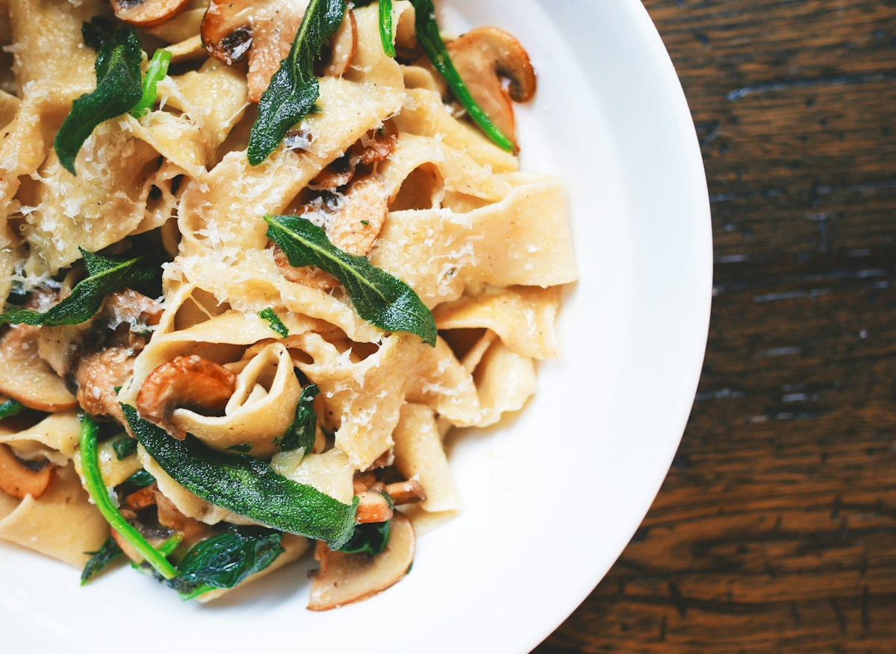

✳ МІСЦЕ ДЛЯ ВАШИХ СМАЧНИХ ІДЕЙРецепти, до яких
Рецепти, до яких
хочеться повертатись.
Зберігайте сімейні секрети й нові знахідки.
Ваш особистий записник — завжди під рукою.
просто, смачно, по-домашньому

МАЛЕНЬКІ РИТУАЛИВелика любов
до їжі.
ЗБЕРІГАЙТЕ ТЕ, ЩО СМАКУЄдо їжі.
ВАША КУЛІНАРНА ІСТОРІЯ